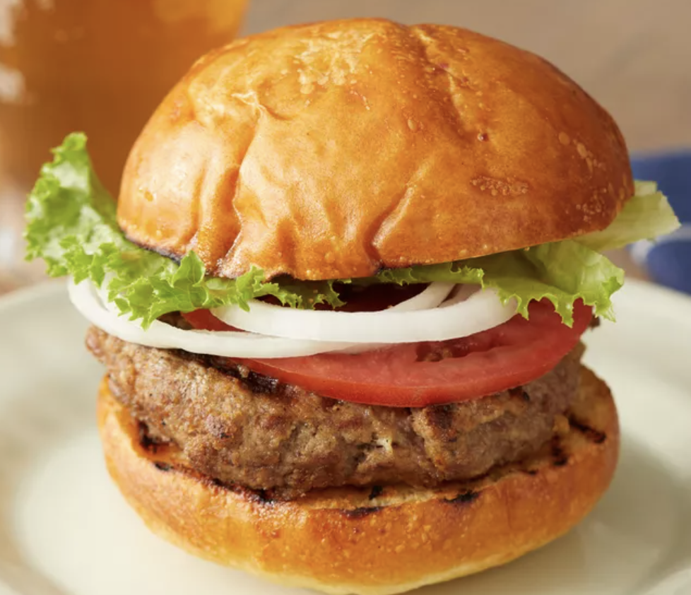

Burger
Sometimes all you want at the end of the day is a simple cheese pizza. This recipe turns simple into sublime with the addition of an exceptional pizza dough, low-moisture mozzarella cheese, and an easy to make tomato sauce that hits all of the right sweet and savory notes to marry all of the flavors in this pie. A simple garnish of fresh herbs, and you've got perfection on a plate.
Orignal Source

Ingredients
- 1 large egg
- 1/2 teaspoon salt
- 1/2 teaspoon ground black pepper
- 1/4 cup Basic Pizza Sauce (recipe follows)
- 1 pound ground beef
- 1/2 cup fine dry bread crumbs
Steps
- Preheat an outdoor grill for high heat and lightly oil grate.
- Whisk together egg, salt, and pepper in a medium bowl.
- Add ground beef and bread crumbs and mix with your hands or a fork until well blended.
- Form into four 3/4-inch-thick patties.
- Place patties on the preheated grill. Cover and cook 6 to 8 minutes per side, or to desired doneness. An instant-read thermometer inserted into the center should read at least 160 degrees F (70 degrees C).
- Serve hot and enjoy!